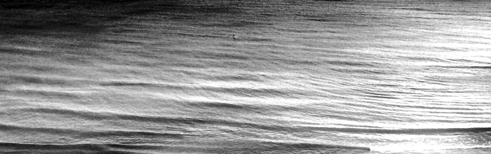

Sources: Department of Natural Resources: Beach Advisory Reports and Clean Lakes Alliance | Mapped by Tiffany Jones 2026
When we head to the beach, our minds are filled with all the items we need to bring. Swimsuit, towel, snacks. Oh, shoot, the sunscreen! We plan for the weather. When swimming in Lake Michigan, considering wave height and rip currents is also immensely important.
It’s important to consider the health of the water you’re swimming in. E. coli (Escheria coli bacteria) is a bacteria which can lurk in the lake water and impact your health. While some symptoms of an infection can be as mild as diarrhea, more serious illnesses can also result.
To put it bluntly...poop! It turns out that all warm-blooded animals have E. coli living in their lower intestines and found in their feces. That waste sometimes makes it's way to beach areas and the surrounding water. Animals on the beach, agricultural run-off and leaking septic systems are main sources. Large rainfalls can also impact what contaminents make their way to the water.
Luckily, cities and counties in Wisconsin that receive funding for beach monitoring, report results to the Wisconsin DNR, who in turn post up-to-date advisories for public reference online. You can check out this resource here. A colored sign system is used at beach locations for on-site notifications to keep the public informed:
With up-to-date information and the right resources, we can stay informed and make healthy choices about enjoying the beautiful beaches and waters along Wisconsin's Lake Michigan shoreline.
The purpose of this site it to give an overview of beach health trends over the last several years for locations along the Wisconsin Lake Michigan shoreline. It would be a worthy goal to try to determine the causation of high E. coli level events, however, as such a complex question requiring much more thorough data analysis, it is beyond the scope of this site.
It is my hope that this information provides readers with a base understanding to encourage further curiousity about water health in our communities and questions results as they relate to beach locations in the state and the moment in time the samples were collected.